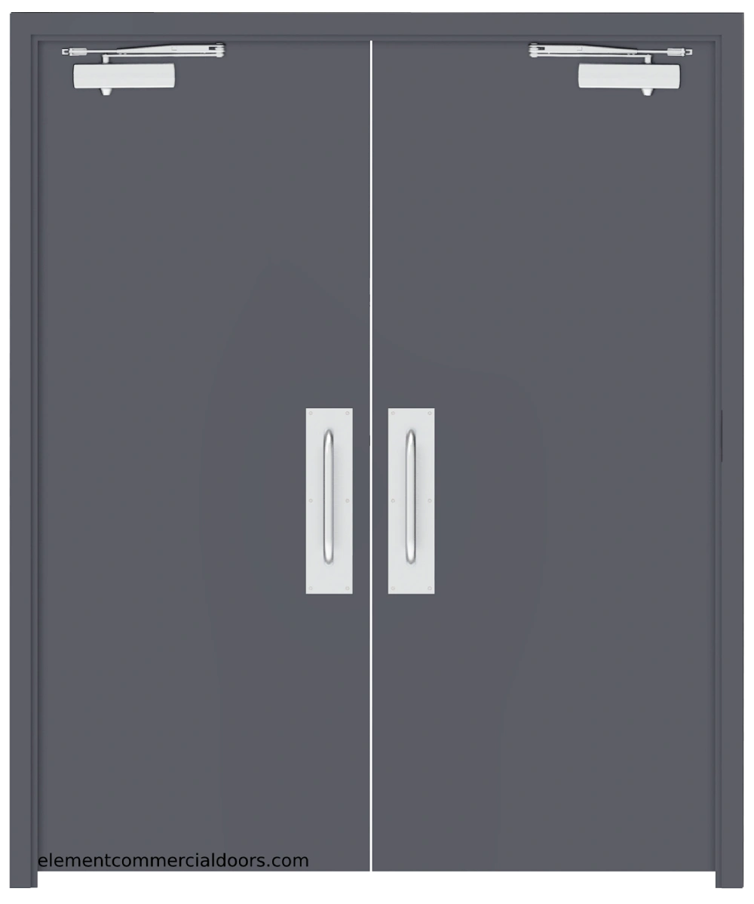

You decided it was best to follow your gut feeling so you walked back up the stairs to find yourself at the door you just left moments ago
however you remember closing the door when you thought it was okay idea to move further down the building and escape maybe but to find the door open?
strangely when you have that thought you begin to hear rustling through the door not sure what it might be. What is that groaning noise?
Should i go investegate, or have second thoughts about coming back up?
